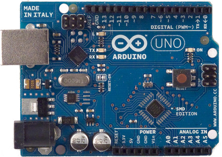

Este proyecto quiere proporcionar un nuevo sistema de seguridad en diferentes zonas donde la proximidad es primordial, como por ejemplo: Zoologicos, Zonas en mantenimiento o Zonas Restringidas en general, este sistema prioriza la proximidad avisando si una u otra persona corta la distancia mas de lo necesario con el animal/area
Objetivo Principal
Nuestro objetivo principal es actualizar la seguridad de diferentes zonas, siendo la tecnologia bastante utilizada en estos ultimos años, siendo bastante util en diferentes aspectos de la humanidad.
Objetivos especificos
- Un objetivo especifico es librar a personas que trabajan directamente manteniendo la seguridad ya sea de visitantes u otras, manteniendose en peligro constantemente.
- Otro objetivo es causar cierta alerta en las personas para que sean conscientes del area a la que se van adentrando.
i
Ficha Tecnica
- Arduino Uno 5v
- Resistencia 220 Ohm
- Jumpers
- Programacion (Internet)
- Sensor Ultrasonico HC-SR4
- Led Azul
- Protoboard
- Zumbador
Arduino Uno

Arduino es una plataforma de software y hardware libres basada en una placa que incluye circuitos electrónicos con entradas y salidas, analógicas y digitales, que conectan el mundo físico con el mundo virtual, a partir de la cual se pueden crear objetos electrónicos interactivos, como robots o sistemas domóticos (5v)
El HC-SR04 es un sensor de distancias por ultrasonidos capaz de detectar objetos y calcular la distancia a la que se encuentra en un rango de 2 a 450 cm. El sensor funciona por ultrasonidos y contiene toda la electrónica encargada de hacer la medición.
Una Protoboard es un instrumento que permite probar el diseño de un circuito sin la necesidad de soldar o desoldar componentes. Las conexiones en una Protoboard se hacen con solo insertar los componentes lo que permite armar y modificar circuitos con mayor velocidad.
Como seguro sabes, cuando hablamos de jumpers nos referimos a los cables de fibra óptica que se utilizan para construir enlaces de interconexión y permitir la conectividad a alta velocidad y ancho de banda, así que son cables con conectores (SC, LC, FC o el que tu red requiera) en los dos extremos (En este caso necesitaremos macho-macho y macho-hembra)
Un diodo LED es un dispositivo que permite el paso de corriente en un solo sentido y que al ser polarizado emite un haz de luz. Trabaja como un diodo normal pero al recibir corriente eléctrica emite luz. Los LED trabajan aproximadamente con corriente de 2V.
Un zumbador (en inglés buzzer) es un transductor electroacústico que produce un sonido o zumbido continuo o intermitente de un mismo tono (generalmente agudo). Sirve como mecanismo de señalización o aviso y se utiliza en múltiples sistemas, como en automóviles o en electrodomésticos, incluidos los despertadores.